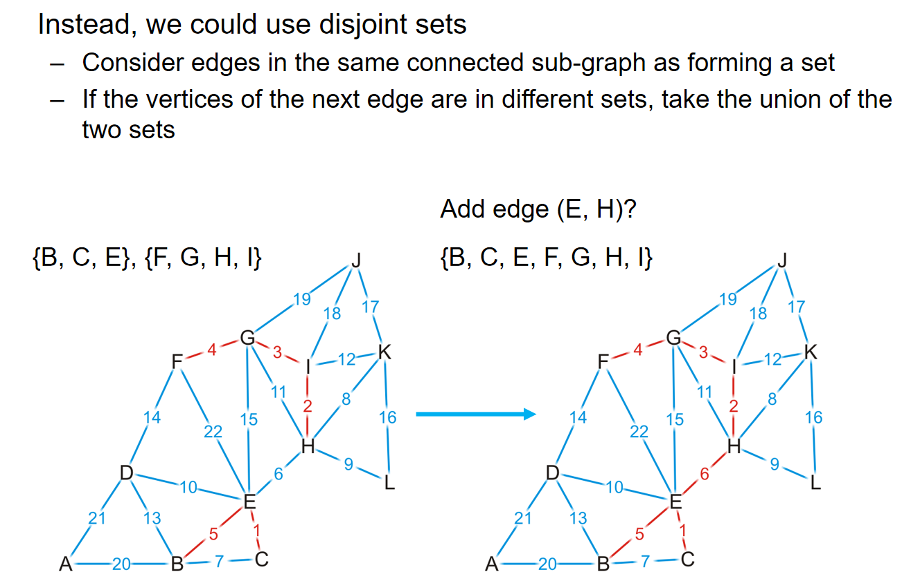
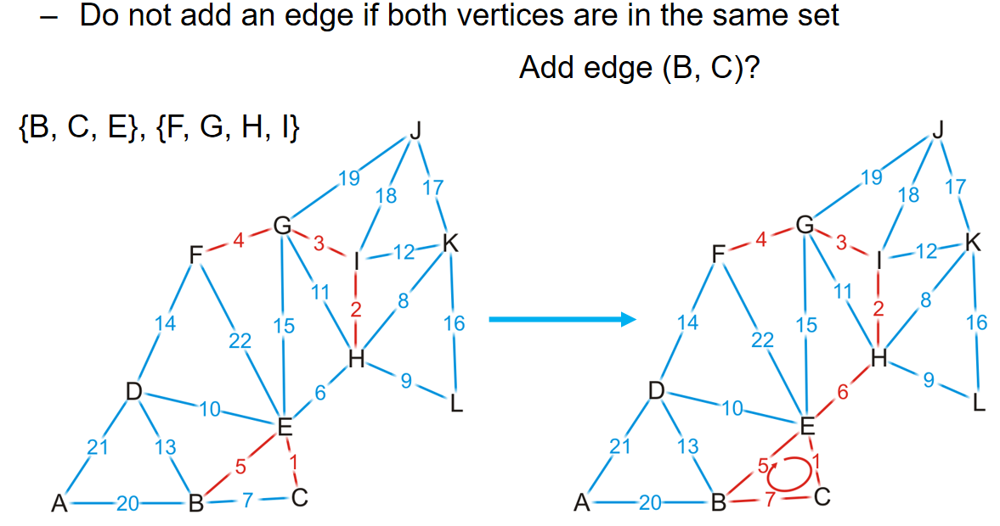
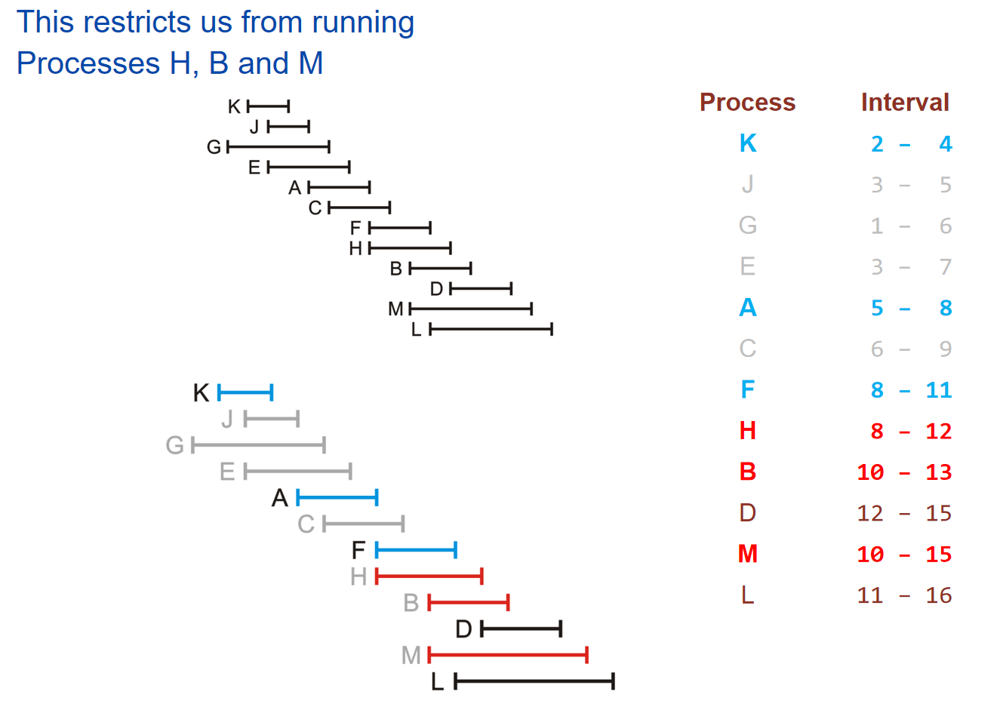
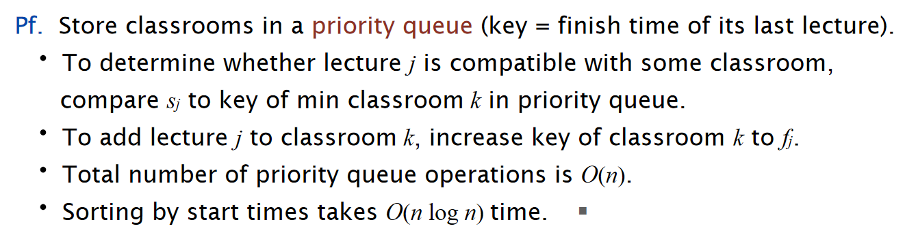
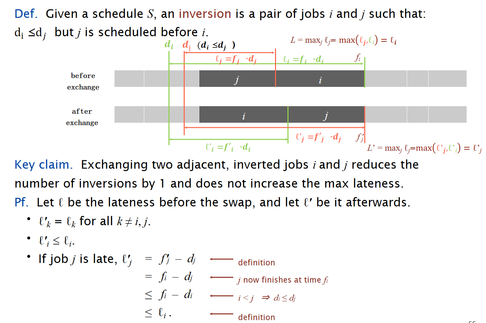
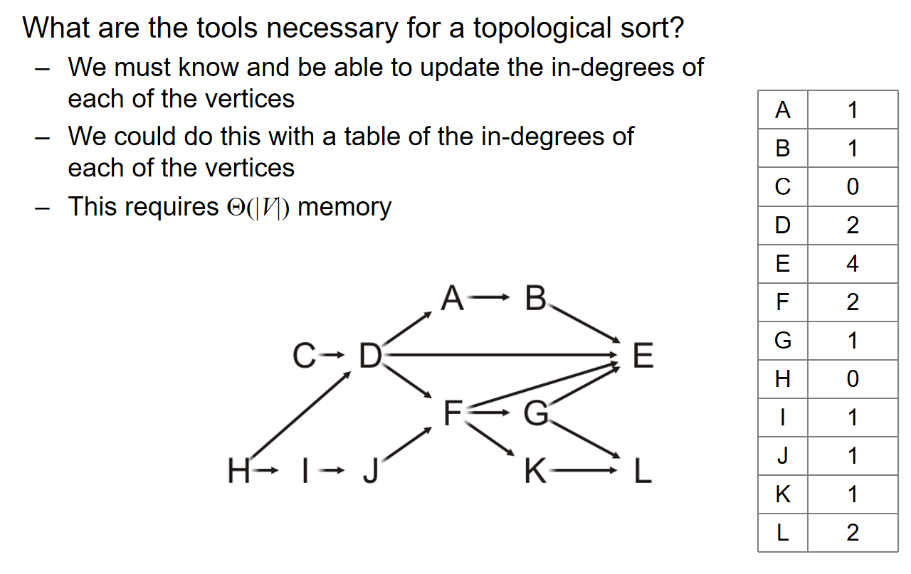
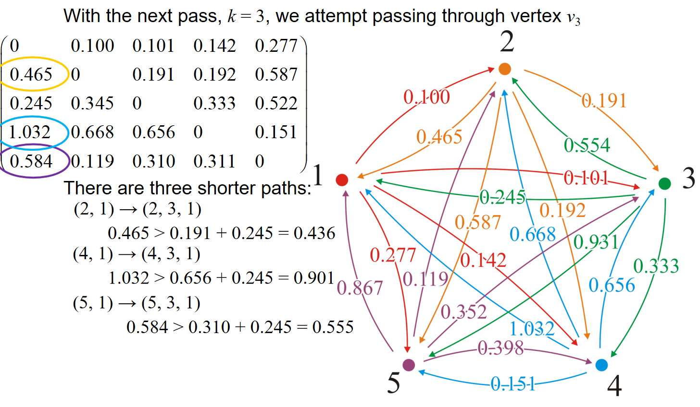

算法 Algorithm
最小生成树
Spanning trees
什么是spanning trees最小生成树？ 首先，生成树的定义如下：
Given a connected graph with n vertices, a spanning tree is defined as a subgraph that is a tree and includes all the n vertices
生成树有n-1个边，并且一个图的生成树并不是唯一的
由上述定义可知：生成树是原来图中的一个子图，并且包含了所有的顶点，而且边的数量正好是顶点数量-1 。下面是一个生成树的例子：原来的图中共有16个顶点，然后红线连接成的生成树里面有15个顶点：

下图又展示了：一个图的生成树并不唯一！可能有多种生成树，都满足定义的要求；同时也展示了为什么这个子图的称呼可以是“树”：

同时，生成树的定义支持权重的概念（weight）：一个生成树的权重是所有生成树上的边长的权重总和。因此引入了权重的概念之后，我们发现：生成树可以有很多种，但是其中最特殊的便是权重最小的生成树。因此，我们引申出了最小生成树的概念：拥有着最小权重的生成树。
另外，生成树的概念存在于连通图中，那么如果不是连通图，而是一个个连通分量组成的呢？可想而知，每一个单独的连通分量都能生成自己的生成树，那么一个个生成树在一起就是spanning forest:
Suppose that a graph is composed of N connected vertex-induced sub-graphs. In this case, we may define a spanning forest as a collection of N spanning trees, one for each connected vertex-induced sub-graph.
A minimum spanning forest is therefore a collection of N minimum spanning trees, one for each connected vertex-induced sub-graph
那么在unweighted graph中也有最小生成树的概念，只不过是在无权重的图中，我们认为每一条边长的权重都是1,。那么在unweighted graph里面，因此可想而知：所有的生成树其实都是最小生成树，而最小生成树们的权重都是\(|V|-1\)。
\(Theorem:\) 在weighted graph中，如果每一条边长的权重都是不一样的，那么这能够保证这个weighted connected图一定有一个唯一的最小生成树。
那么接下来将介绍两种寻找最小生成树的算法。在不特别说明的情况下，默认有权连通图的每一条边长权重都是不一样的，从而确保最终只有一个最小生成树。
Prim's Algorithm
Strategy
思想：假如说我们对于这个图的一部分顶点k<n，已经知道了一个最小生成树，那么我们如何让这个k个顶点的最小生成树进行扩张呢？我们的策略是：对于每一个可能的顶点\(V_{k+1}\)来说，我们可以遍历这个顶点到k个点的所有可能存在的边长的权重，然后找到权重最小的边，在这些对一个可能新顶点的最小权重边中再找到拥有最小权重值的顶点，然后进行连接。当然，这个流程也可以换个方式：对于最小生成树里面的所有的顶点，列出所有的和非最小生成树顶点连接的边的权重，然后找到最小值，并且连接这两个顶点。这样我们就拥有了这k+1个顶点的最小生成树了。这个扩张思路有一个专门的属于叫做cut property，来说明这种扩张策略的合理性：

直觉上来说，如果这种性质是错的话，那么这个顶点只能通过其他的方式和这k个顶点的最小生成树进行连接，那么对于另外一条线路来说，一定有一个另外的顶点和这个最小的生成树进行连接，而这条边长的权重就至少比那个\(V_{k+1}\)的对应的边长的权重高，这就是矛盾点
那么在之前的流程中都是默认知道了k个顶点的最小生成树，那么这个k从1遍历到n不就找到了最小生成树吗？对于k=1的情况，认为一个顶点的最小生成树就是一个顶点本身。因此我们得到了Prim's algorithm:

有更多的细节值得探讨：
- 对于每一个顶点来说，在结构体里面可以设置一个Boolean Flag，来记录这个订单是否已经被访问，i.e.，是否已经在k个顶点的最小生成树里面了
- 记录每一个顶点到最小生成树任意一个节点的最小的distance
- 同时要记录父节点的指针
下面将通过例子来生动地演示prim algorithm并且将展示更多的实现细节：

关于空初始化，随便选择一个顶点，然后标记这个顶点的距离为0（合理，因为自己到自己的距离当然是0），同时其他的所有顶点到这个顶点的距离都是无穷（合理，因为其他的顶点都还没有编入到最小生成树里面），设置所有的顶点都是unvisted状态1，然后所有的顶点的父节点指针都置为空指针。当所有的距离小于正无穷的顶点都是visited的时候，算法结束。所以，第一步初始化的结果如下：

那么第一步，遍历最小生成树里面所有顶点到非最小生成树顶点的距离，找到最小值和其对应的另外一个顶点：这里是4，权重最小是1，因此1 4进行连接。同时，对于2 5这两个顶点来说，我们依然记录这两个顶点到1的距离，并且将父节点设置为1节点的指针。这是算法上的习惯罢了，不妨碍我们流程的核心：记录最小生成树里面的顶点更新：1和4. 因此在这一步结束之后，我们更新了2 4 5节点的信息，但是还没更新最小生成树，只是把根节点置入——4的置入在下一步中进行。
每一步访问一个节点，然后在下一步这个节点放进最小生成树，同时访问一个新的满足要求的节点；只有放进最小生成树的时候，Boolean Flag才置为True

第二步，遍历1 4节点和其他非最小生成树里面的节点的边长的权重，然后更新2 5 7 8四个节点的数据。当然，从数据上来看，5节点的信息不更新。更新完成之后，把4这个节点放进最小生成树里面。同时根据剩下的2 5 7 8四个节点的distance，我们知道下一步将访问2号节点。
第三步，访问2号节点，然后更新3 5 6节点的信息，当然从数据的角度上来看，3 5 6节点的数据进行了更新。更新之后，把2号节点放进最小生成树里面。并且我们知道即将访问6号节点。

不断重复操作，最后我们将会得到如下的结果：

总而言之：
- we begin with a vertex which represents the root
- starting with this trivial tree and iteration, we find the shortest edge which we can add to this already existing tree to expand it
Implementation and Analysis


Kruskal's Algorithm
核心思想是：将所有的边长按照权重进行排序，然后按照权重最小到最大的顺序遍历所有的边。对于遍历的边来说，如果添加之后子图没有成环，那么就把这条边加进最小生成树里面。不断这样加边，直到有\(|V|-1\)条边被加入，这样我们就有了一个最小生成树。例子如下：

在具体的实践中，我们用数组储存边长和它们对应的权重，然后通过任一排序算法进行sorting。但是最最关键的在于：如何判断一条边的加入会导致环的出现？我们可以检查这条边的两个端点在先前的生成树中是否已经是连通的。那么这样的话，分析如下：

有没有更好的办法来帮助快速判断是否成环呢？可以考虑使用并查集。如果两个点的代表元素都是一样的话，说明这个并查集组成的树中，两个点是连通的，这两个点之间加边就会形成环。



在上面的这个例子中，在GH边的判断中，由于G H在一个并查集里面，我们就会知道GH这条边如果加上将会成环。而事实也如图所示。
这样一来，由于并查集的操作在使用了路径压缩和优先级策略后，时间复杂度近似常数，因此检查和构建最小生成树的时间复杂度都是\(O(|E|)\)；而dominant time就是sort这些边长了，时间复杂度是\(O(|E|ln|E|) = O(|E|ln|V|)\).
Uniqueness of MST
Lemma: If all edge weights in a connected graph G are distinct, then G has a unique minimum spanning tree. 这条定理的证明如下：

上面是经典的贪心交换论证。假设有两个最小的生成树，那么将至少会有两条边，它仅存在于其中的一棵树而不会存在于另外一颗树中。那么假设对于两棵树来说，满足上述条件的边中，权重最小的分别是e e'边。此时将e并到T'树中注意到由于这里是树结构，任意两点之间加边都会形成一条环，因此在加上了e这条边之后，会包含一个环。这个环除了e'还有至少另外一条边e''，而这条边大于等于e'。那么构建T'+e-e''的树，那么权重不大于T'，表明T'不会是最小生成树，形成了矛盾。
这种贪心思想和贪心论证方式如下图所示：非常的重要！

Painpoint
-
Using Cayley's formula, the number of spanning trees for a complete graph \(K_n\) is \(n^{n-2}\)
-
Kruskal and Prim都能够处理multi-edge的情况
-
After Kruskal's algorithm, we choose \(m\) edges, then the number of connected components of \(G\) is \(|V|-m\).
-
Kirchhoff's Matrix-Tree Theorem: Algorithm Workflow
Input:A graph \( G = (V, E) \) with \( |V| = n \) vertices and \( |E| \) edges.
Steps:
a.Construct Matrices:
- Degree Matrix (\( D \)): A diagonal matrix where \( $D[i][i]$\) is the degree of vertex \( i \).
- Adjacency Matrix (\( A \)): A matrix where \( $A[i][j] = 1$\) if there is an edge between \( i \) and \( j \), and \( 0 \) otherwise.
b.Compute the Laplacian Matrix (\( L \)): c.Select a Cofactor (\(( L^* )\)):
- Remove any one row and the corresponding column from \( L \).
d.Compute the Determinant:
- Calculate the determinant of \( $L^*$ \), which gives the number of spanning trees \( $\tau(G)$ \).
Output:The number of spanning trees \( $\tau(G) $\).
- 使用二叉堆优化Prim算法并不是任何时候都是更好的方法，因为如果\(|E| = \Theta(v^2)\)，那么时间复杂度反而更高了。
- Kruskal使用并查集优化的具体细节：
首先对所有的点进行建堆。然后对所有的边的权重进行sort。
然后每条出来一个边，有u v两个顶点，如果：
Find-Set(u) != Find-Set(v):
那么就把这条边加进answer里面，并且Union(Find-Set(u), Find-Set(v))
// 惨痛的教训。。。
- 在undirected connected graph里面，最小的边并不一定会出现在所有的最小生成树里面，因为可能权重不是distinct；同时，undirected connected graph中权重最大的边也可能出现在MST里面，因为可能边长数量恰好就是顶点数量-1（树）。
- 如何求出修改一个边长的允许范围，从而不改变MST呢？对于MST里面的边长来说，如果删掉，那么MST就会边长两个联通分量，两个联通分量之间的边长的最小值，就是这个边长的最大值；对于不在MST里面的边长来说，如果加上，那么MST中就会有一个环，这个环除开这条边的所有的边长的最大值，就是这个边长的最小值。
- 如果G是一个无向图，\(f(\cdot)\)是一个严格单增的函数，\(F(G)\)是G图中所有边长权重w换成\(f(w)\)后的图。那么如果T1 T2是G的生成树，且\(W(T_1) > W(T_2)\)，那么\(W(F(T_1)) > W(F(T_2))\)这个结论看似是正确的，但是实则是不一定成立的！可以通过举反例说明。
- If G is connected, then \(|E| \geq |V|-1\); If G is acyclic, then \(|E| \leq |V|-1\)
- G = (V, E)'s adjacency matrix is A, where \(A_{uv} = 1\) if \({u,v} \in E\), and 0 otherwise. Then: \(\sum_{u,v \in V}A_{uv} = 2|E|\), and \((A_{uu})^2 = degree(u)\)
- If we add a new edge \(e = (u, v)\) into a graph\(G = (V, E)\) with unique MST to get a new graph \(( G' = (V, E \cup \{e\}) )\). There is at most 1 edge difference between the MST of \(G\) and \(G'\).
贪心算法
Greedy algorithms select the locally optimal choice at each step, hoping that these local choices will lead to a global optimum.
引子——Coin changing
假设我们要找零钱，那么如何用最少的硬币来支付零钱呢？已知硬币的面值有1 2 5 10 20 50（这里举的例子是欧元）。那么假设我们每一种硬币都有很多很多，那么直接总是加尽可能大的面值的硬币，只要最后钱的金额没有超就可以了。这种策略貌似是有用的。
但是这种策略并不是任何情况都奏效：假如说硬币的面值为1 4 9 16 25 36 49呢（平方关系）。假如说要找72块钱，那么直接两个36不就好了吗？但是按照之前的策略，\(72=49+16+4+1+1+1\)，而这显然不是最优解。很明显，我们的算法并没有那么的简单，这里我们需要使用到贪心算法：

例如Prim算法就是一个贪心算法：在策略中考虑的是已经知道k个点的最小生成树，然后尝试不断expand这棵树。同样在找零钱的例子中也是用了贪心算法：在欧元的例子中，任何一个k个硬币的子集都是一种partial solution，在我们拥有一个partial solution之后，我们尝试将一个最大化零钱面额增长且不超过总金额的硬币加入到子集中。这种算法在欧元的情况能够奏效，但是在quadratic面额的硬币中却不奏效。
下面将举一些贪心算法最优的例子：
Interval scheduling
考虑如下图所示的任务：

对于这种任务，我们设计：EARLIEST-FINISH-TIME-FIRST算法：将所有的工作按照结束时间早晚来进行排序。然后对于这样的一个sorted order，挑出一个元素，然后剔除掉这个order下之后所有的和这个元素的时间段有重合的元素；重复这样的操作一直到没有元素可以操作位置，然后挑出来是多少个那么就是工作子集的最大数量。示意图如下：

这个算法貌似还是很简单的，但是非常奇怪的问题在于：为什么这种算法就是最优的？


Reference: kimi.moonshot.cn
Interval Partitioning
考虑下面所示的任务：


对于这种任务，我们设计：EARLIEST-START-TIME-FIRST算法：

如下面是流程进行到一半的实例：
\(Proposition:\)The earliest-start-time-first algorithm can be implemented in O(n log n) time.

同时，我们定义open interval的深度，而且能观察到：需要的教室数量至少为深度：

因此有\(Theorem:\) Earliest-start-time-first algorithm is optimal.

Scheduling to minimize lateness
考虑下图所示的任务：

我们希望安排任务，从而导致超过预期due time的时间尽可能的小。那么对于这个任务，我们可以设计EARLIEST-DEADLINE-FIRST算法：

关于这个有两个关键观察：
- 存在一种最好的安排，使得整个任务流程不存在闲置时间
- EARLIEST-DEADLINE-FIRST算法没有闲置时间
- The earliest-deadline-first schedule is the unique idle-free schedule with no inversions.
Given a schedule S, an inversion is a pair of jobs i and j such that:\(d_i ≤ d_j\)but j is scheduled before i.
- If an idle-free schedule has an inversion, then it has an adjacent inversion.
adjacent inversion: two inverted jobs scheduled consecutively
\(Theorem:\) The earliest-deadline-first schedule S is optimal.


Optimal Caching

Reference: kimi.moonshot.cn

直觉上，如果是最优解，那么只有在需要将新数据储存到内存中的时候，才需要进行新数据的caching，而这样的安排我们定义为reduced schedule。
\(Theorem:\) Given any unreduced schedule S, can transform it into a reduced schedule S′ with no more evictions.

$Theorem: $ Farthest in Future algorithm is optimal eviction algorithm.
Topological Sort
Definition
考虑一种实际情况的任务场景：不同的task之间存在的dependency relationship，即对于一个任务来说，必须要先完成另外一个任务，才能进而完成这个任务。这种依赖关系可以形成一个部分的排序：A partial ordering on a finite number of objects can be represented as a directed acyclic graph (DAG)
同时，dependency中的环也可能造成问题，比如说完成一个任务的前提任务就是这个任务本身，那么这种关系其实就是不可取的。
Topological sorting 定义如下：
对于任意两个连通的点，那么topological order中的相关子序列，会呈现和path中一样的dependency关系顺序。简化一下就是：如果两个点之间是连通的，那么这两个点在topological order中谁在前，谁就是被依赖的，也就是上图中的定义。下面是一个例子：
重要！Topological sorting的结果并不是唯一的！
\(Theorem:\) A graph is a DAG if and only if it has a topological sorting
这一点直觉上很容易认同，given that：如果一个有向图有topo sorting，但是里面有环，那么将会产生自己依赖于自己的问题，而这种关系是不可取的
但是实际的证明比较复杂：
lemma1: A DAG always has at least one vertex with in-degree zero (source)
lemma2: Any sub-graph of a DAG is a DAG
然后利用两个引理1，按照if and only if的证明逻辑去进行证明


Algorithm
算法的idea非常的简单：找到图中的任意一个in-degree为0的节点（source），然后放入topological sorting里面，然后删除掉这个点和与这个点相关的所有的边。这个步骤重复\(|V|\)次。
从上面的算法就能看出来：topo sorting的顺序当然不是唯一的，因为source可能不止一个
idea is cheap，那么implementation中仍然有许多的细节：为了支持上述的算法，我们应该存储什么信息？以什么方式存储？如何更新信息？这些都是问题：

同时，为了找到当前图中哪一个点是source，每一次sort的时候，都要遍历存储了入度的列表来发现谁可以是source，那么这样的话时间复杂的将会是\(O(|V|^2)\)级别。当然有更好的实现方式：用一个队列来暂时储存那些source点，然后每一次有点的入度降为0那么就将它Push进队列里面。那么关于队列的时间复杂度：最开始遍历入度列表，需要\(\Theta(|V|)\)；然后对于图中的每一个顶点来说，它们都会被push进队列一次，且被pop off一次，因此所有点的Push pop需要\(\Theta(|V|)\)。
最后，关于全部的‘删除顶点及其对应边，从而更新入度信息的时间复杂度’还未进行分析：
最后综合一下：Topological sort的算法复杂度为：
\(\Theta(|V|+|E|)\) if we use an adjacency list; \(\Theta(|V|^2)\) if we use an adjacency matrix; Memory requirement: \(\Theta(|V|)\)
可以看出：如果是稠密图，那么使用adjacency matrix or list都是无所谓；但是如果是稀疏图，那么就是adjacency list更好。
同时值得注意的是：如果在算法运行的过程中，发现所有剩余的顶点，它们的入度都不是0，那么就说明一定有环的出现，就可以停止topo sorting了。换而言之，我们拥有一个\(\Theta(|V|+|E|)\)的算法来判断图里面是否有环！
总而言之，implementation如下：
更好的是：如果使用的是数组实现的queue而非STL中的队列，那么最后这个数组储存的就是topological sorting的顺序！
Finding the critical path
考虑一种实际的情景：假如说每一个任务的完成都需要对应的时间呢？如果同一时间段只能干一个任务，毫无疑问，最后的总用时就是所有任务的要求时间总和，而实现任务的顺序是任意的一个topological order。但是如果我们能够同时做多个任务呢？（注意依赖性）首先我们定义：
The critical time of each task is the earliest time that it could be completed after the start of execution The critical path is the sequence of tasks determining the minimum time needed to complete the project
If a task on the critical path is delayed, the entire project will be delayed
具体如何找到critical path从而求出完成所有任务的最小时间要求如下图：


逻辑顺序：弹出一个顶点之后，首先更新顶点自己的critical time += task time；然后对于这个顶点的所有的邻居来说，更新入度，如果这个邻居的critical time比这个顶点的critical time小，那么Previous Task指针更新为这个顶点，更新critical time = 顶点的critical time，并且如果有入度为0的就Push进队列。
该算法的时间复杂度和topological sort一样，都是\(\Theta(|V|+|E|)\)!
最后根据表格中的task and previous task信息，我们能够创建一个森林来表示平行作业的顺序：

Painpoint
- A critical path in a DAG is a path from the source to the sink with the maximum total weights
- Any directed tree has a topological sorting, because they are DAG as well.
- A DAG with all different weighted edges may have more than one critical path.
- A directed graph with n vertices and n-1 edges may not have a topological sorting. Consider a traingle plus one edge, with 5 nodes in total and 4 edges in total.
- Given a directed acyclic graph G. If u appears before v in a topological sort, there won't be any path from v to u in G.
- Topological Sort的核心是：任何一条路径上的点，在拓扑排序中这些点的顺序应该保持一样的order
- Given a DAG with probably negative edge weight and a source vertex s, we want to find the shortest path from s to every vertex. 对于这个任务，可以使用基于拓扑循环的松弛方法。给出拓扑排序后的order，然后类似于bellman ford方法，按照topological order对顶点们依次松弛。（注意将s的距离标为0，然后其他的顶点距离都标记为无穷）这个算法比Bellman-Ford时间复杂度较低。
Shortest Path
Definition
给出一个有权有向图，一个经典的问题就是找到两点之间shortest path。
In a weighted graph, the length of a path is the sum of the weights of each of the edges in that path
我们的目标就是找到shortest path并找到它的length。我们将假设所有边长的权重都是一个正数。能够实现这个目标的算法有很多种，如A星算法、Dijkstra、Bellman-Ford、Floyd-Warshall算法。
Dijkstra's Algorithm
该算法只能找到一个source的最短路径。（single-source）
strategy
Dijkstra’s algorithm solves the single-source shortest path problem. 这个思维和Prim算法很相似。 核心策略是：假设你现在在A顶点，我们能够知道所有的adjacent的点（这个信息是adjacency list or matrix给出来的）。假设遇到了下图的情景（只截取了A顶点相关的顶点），那么：
- 我们能够断言从A出发到达B的最短的path就是边长AB吗？是可以的，因为假设是通过C D这两个顶点之后再到达B，那么15 and 9 > 5
- 但是我们断言从A出发到达C的path最短的就是AC边长吗？当然不可以。因为有可能走B D会遇到权重更短的边，从而实现shortest。如第二章图中的反例


可以看出：我们对于部分的顶点来说，我们能够知道最短的路径（如上图的B），但是还有很多是无法断言的，因此我们规定：前者marked as visited；后者marked as unvisited。能够注意到：我们也可以通过visited vertices知道the shortest distance to each unvisited vertex。

因此：


如下图是一个寻找每一个顶点到K点的shortest path：

流程：每一次的操作是从一个点开始，找到所有的邻居，用这个点的distance和邻居们边的数据计算startnode到这些unvisited邻居的距离，然后更新表格中的distance；如果这个数据更小，那么更新distance并且previous改成这次操作的点，否则就distance previous都不修改；最后在表格visited为false的点中找到distance最小的点，作为下一个操作的点。重复操作，直到所有的点是visited。
注意：修改数据的点一定unvisited的。如果一个点最终被定为了visited，它的数据不再修改
利用表格中的previous信息，就能够找到每一个顶点到startnode最短的路径，进而可以生成一颗树。如下图所示。值得注意的是：Dijkstra算法产生的生成树不一定是最小生成树！
在算法的过程中，如果出现了所有unvisited vertices的距离都是正无穷的情况，那就说明这个图并不是连通的，而目前状态找到是连通分量里面所有的点到起始点的最短路径。而如果只想找到两个点之间的最短路径，那么就选择其中的一个点进行算法，然后当另外一个点被标记为visited的时候，算法停止。而且如果图是有向图，那么这个算法依然是合理的。
implementation and analysis
(注意上图中Dijkstra时间复杂度的分析哪些是O哪些是\(\Theta\))(下图中全都是O，但是这并不是准确的；以上图为准！)
Reference: oi.wiki
值得注意的是，如果是稠密图，即\(|E| = \Theta(V^2)\)，则暴力算法反而是更优的。这一点在最小生成树的时间复杂度分析中也是如此。但是斐波那契堆的使用可以保证无论是稠密图还是稀疏图，时间复杂度\(\Theta(|E|+|V|ln(|V|))\)都不是更差的。
Bellman-Ford Algorithm
如果有些边长是负数的话，而且只要图里面的环都不含负数边，那么Bellman-Ford就可以找到最短的距离。值得注意的是，这个算法比Dijkstra's Alrogithm更慢，但是这个算法可以处理负数权重的边长，但是Dijkstra做不到。该算法只能找到一个source的最短路径。（single-source）

Reference:oi.wiki

A* search
Background
A星算法解决的是single-source图中的最短路径问题，和Dijkstra算法较为类似。假设我们对于任意两个顶点之间的路径的距离都能有一个heuristic lower bound distance，这就和地图上直接两点之间肯定直线最短，因此路径肯定至少比这条两点间的线段长。
考虑从A出发到达B的情景：假设A B两点之间的直线距离是53，那么说明AB路径至少是53；又假设我们已知A地到C地的最短路径是28，而C B两点之间的直线距离是32，那么就说明：延长A C路径从而抵达B的路径的距离至少是60。我们用\(w(C)\)记号来表示：在‘从A出发沿着某条路径到达C点，并且将继续延伸从而达到B点’的情境约束下，A B两点之间的可能的最小路径距离。即：
Strategy

接着，再迭代的过程中，可以考虑Tree Search的角度：

也可以考虑Graph Search的角度：
在实现的过程中：The A star search algorithm directs its search towards the destination, whereas Dijkstra’s algorithm radiates out from the initial vertex.
但是在上述的实现过程中，我们发现：这个heuristic lower bound信息保不保熟？如果是地图上面寻找最短路径，尚可保熟，因为Euclidean距离不会骗人。
The path the crow flies is always shorter than the road the wolf runs.
但是如果是更为广泛的情景呢？ A星算法真的能总是给出最优解吗？考虑下面的场景：

Reference: Andrew Moore, Carnegie Mellon University
在上面的场景中，\(h(B,C)\)过度预计了BC两节点之间的真实距离，从而导致最终算法没有倾向于ABC的路径。那么什么样的heuristics是非常合适的呢？
第一种：\(d(u,v)\)代表u v两点之间的最短路径距离，那么如果\(h(u,v) \leq d(u,v)\)，那么\(h(u,v)\)就称为admissible。换而言之，这样的heuristic is optimistic or a lower bound on the distance。从这个观点重新看Euclidean distance：地图上两点之间的欧几里得距离一定是最短的，明显\(h(u,v) \leq d(u,v)\)。那么这样的heuristic表现如何呢？这些条件表现很好！有以下的定理：
\(Theorem:\) If h(n) is admissible, A star algorithm using TREE-SEARCH is optimal.
第二种：我们定义：A heuristic is consistent if for every node n, every successor n' of n generated by any action a, we have: \(h(n) \leq c(n,a,n') + h(n')\)。那么因此：\(w(n')\geq w(n)\)，i.e.，w(n)沿着路径不会下降。这样的heuristic也表现的很好，有以下的定理：
\(Theorem:\) If h(n) is consistent, A star algorithm using GRAPH-SEARCH is optimal.

Time Complexity

A* for N puzzle problem
对于3×3和4×4的puzzle，分别共有9！和16！种状态，每走一步就会完成一次状态的转化。因此可以用下面的状态节点关系图来表示solution：
注意，这个图不是树，因为可以通过一系列的操作回到原来的状态
那么问题就转化成了：在上述的状态节点关系图中找到固定两个状态之间的最短路径（所有边的权重都是1）。那么可想而知的是，散发式的Dijkstra算法将会非常的慢。那么倘若使用A星算法，那么这个heuristic lower bound应该如何定义呢？ 我们可以考虑三种距离：Discrete Distance, Hamming Distance and Manhattan Distance。

Hamming heuristic是一种简单的启发式函数，它通过计算当前状态中方块位置与目标状态中相应方块位置不匹配的数量来评估当前状态与目标状态的距离。这种启发式函数对于指导A星算法在搜索树中选择最有希望的路径非常有效。
曼哈顿距离（Manhattan Distance）启发式函数是一种常用的估计函数。它通过计算每个方块从当前位置到目标位置在水平和垂直方向上的距离之和来评估当前状态与目标状态之间的距离。具体来说，对于每个方块，曼哈顿距离是其当前位置与目标位置在行和列上差异的绝对值之和。
Reference: wiki.moonshot.cn

如果使用的是discrete distance，那么相当于是Dijkstra算法，表现依然很差；如果使用的是Hamming Distance，那么表现也并没有改善很多（only a small change），仅仅只在当前状态和目标状态已经十分接近的时候才会表现良好；而Manhattan Distance能够使得A星算法拥有很好的表现。上述的内容很好地、感性地解释了'heuristic,启发式'的真正含义是什么。
Floyd-Warshall
Dijkstra算法找到一个顶点到另外所有顶点的最短路径所需要的时间复杂度是：\(O(|E|ln|V|)\)。也就也为着，找到所有的顶点对之间的最短路径，需要的时间复杂度是\(O(|V||E|ln|V|)\)。在稠密图中，最坏的情况便是\(O(|V|^3ln|V|)\)的时间复杂度。有没有更好的算法呢？Floyd-Warshall算法应运而生：It works with positive or negative weights with no negative cycle. 这个算法能够找到任意一个source的最短距离。
Strategy
考虑两点之间的距离关系：如果两个点其实是一个点，那么距离就是0；如果两个点不同，而且之间有一条边，那么距离就是这条边长的权重；如果两个不同的点，而且之间没有边长，那么距离就是无穷。明显，在上述的考虑中，我们只考虑了直接连接两个顶点的边长。

但是两点之间的最短距离用上述的定义明显是不妥的。如上图所示，虽然我们可能知道67 53两点之间的边长的权重，但是我们也可能会怀疑：经过了其他点的两点之间的路径，会不会比这条边长的权重更短？
因此在上述的情境中，我们定义\(d_{i,j}^{(1)}=min\{d_{i,j}^{(0)}, d_{i,1}^{(0)}+ d_{1,j}^{(0)}\}\). 同时我们定义：\(d_{i,j}^{(k-1)}\)是只允许中途访问顶点\(v_1,...,v_{k-1}\)的最短距离。
假设现在我们已经知道了所有顶点对的\(d_{i,j}^{(k-1)}\)，那么对于\(v_i,v_j\)这两个顶点来说，假如说出现了一个新的定点\(v_k\)，那么应该如何更新i j两点的\(d_{i,j}^{(k)}\)？核心的观察是：两点之间的最短路径一定只有两个可能：一种是包含了顶点\(v_k\)，一种是不包含。如果包含，那么可想而知的是，i到k与k到j的路径的距离都应该是最短的，i.e.，\(d_{i,k}^{(k-1)} \& d_{k,j}^{(k-1)}\)，而这些信息我们都应该是知道的。因此我们有了更新\(d_{i,j}^{(k)}\)的逻辑： 而用这种逻辑就能够更新所有的顶点对的\(d_{i,j}^{(k)}\)。而k可以从0一直遍历到顶点数量。因此c++示意代码如下：
for ( int k = 0; k < num_vertices; ++k ) {
for ( int i = 0; i < num_vertices; ++i ) {
for ( int j = 0; j < num_vertices; ++j ) {
d[i][j] = std::min( d[i][j], d[i][k] + d[k][j] );
}
}
}
可以看出，算法的复杂度是\(\Theta(|V|^3)\)。可以通过下列的一系列图管中窥豹：




可见，在使用adjacency matrix的时候，在经过的点为矩阵中的第i行第i列的时候，挑出这两条线上的数据；然后意义比对矩阵中其他数据和投影在两条线上的数据的和，如果和更小，那就更新。比如说k=3的时候，对应的是矩阵中第三行第三列的数据，那么例如对1.032来说，位置投影到两条线上得到的数据是0.245,0.656，因此比较1.032与0.245+0.656.
What is the shortest path?
还有一个问题：距离倒是更新了，算法中如何储存路径的节点信息？
for ( int k = 0; k < num_vertices; ++k ) {
for ( int i = 0; i < num_vertices; ++i ) {
for ( int j = 0; j < num_vertices; ++j ) {
if ( d[i][j] > d[i][k] + d[k][j] ) {
p[i][j] = p[i][k];
d[i][j] = d[i][k] + d[k][j];
}
}
}
}
初始化连接顺序矩阵式之后，在distance更新的过程中，如果说这一轮经过的是i顶点，那么在修改distance的连接顺序矩阵中对应位置改成i即可。

可以观察到，在最后的结果中，如果\(p_{i,j}=j\)，那么就说明这条相邻的边就是shortest path的组成部分。那么如何判断路径呢？假设\(p_{i,j} = v_1,p_{v_1,j} = v_2,...,p_{v_t,j} = j\)，那么路径就是\((i,v_1,v_2,...,v_t,j)\)。

Which vertices are connected?
最后，如果我们只关心两点之间是否有路径存在呢？那么我们可以仍然利用Floyd-Warshall算法。维护一个连接信息的矩阵，一开始初始化的时候是\(tc[i][j]=true\)如果有i指向j的边。那么随着之后的Floyd-Warshall算法，如果对应位置的distance更新，但是tc矩阵中对应的是false，那么就更新为true。通过上述的操作，我们就能找到strong connected component。
Painpoint
- Dijkstra算法产生的生成树不一定是最小生成树
- 暴力Dijkstra使用adjacency list or matrix不影响最终的时间复杂度，都是\(\Theta(n^2)\)
- 如果是稠密图，暴力Dijkstra反而比使用二叉堆或优先队列的\(\Theta(|E|log|V|)\)更好；斐波那契堆方法是最优的
- 如果是有向图，那么Dijkstra算法依然不需要改变
- Bellman-Ford算法比Dijkstra慢
- Dijkstra不是在所有的DAG中都是万能的，如果有负数边长的存在就用不了
- Dijkstra暴力+使用adjacency list的时间复杂度为: \(O(|V|^2+|E|)\)
- Dijkstra’s algorithm could only find the shortest path on non-negative weighted graph
- 通过修改 Dijkstra 算法，在所有最短路径中选择边数最少的路径：给所有的边长都加上\(\epsilon\)，其中\(\epsilon < \delta/|E|\)，然后运行Dijkstra算法。这是因为在两条路径拥有相同权重的同时，边长数量较少的路径将有较小的\(\epsilon\)综合。其中\(\delta\)代表的是所有边长的最小值。
- If we add a constraint that each edge can only appear at most once in the shortest path, Dijkstra’s algorithm still works for positive-weighted graphs.
- ‘Dijkstra’s algorithm cannot work for graph with both positive and negative weights but can work for graph whose weights are all negative’ 这个说法是错误的！
- Bellman-Ford algorithm can be extended to find the negative circle for directed / undirected graphs with negative weights.
- Dijkstra算法可以处理有环的有向图，只不过是不能处理包含了负数权重边长的图。
- Dijkstra algorithm can be viewed as a special case of the A Graph Search algorithm where the heuristic function from any vertex \(u\) to the terminal \(z\) is \(h(u, z)=0\). Furthermore, if we use heuristic function \(h(u) = c\) for any \(u \in V\) where c is a positive constant, then the A search algorithm will be the same with Dijkstra’s algorithm.
- Floyd-Warshall and Bellman-Ford算法都是需要图中没有负环
- Puzzle问题中的hamminng and mahattan距离，以及距离最终状态的真实移动最少步数距离，都是admissible heuristics。（注意：discrete距离并不是admissible的！）
- 'Suppose the unique shortest path from source s to a vertex t has \(l\) edges. It is impossible that we find this shortest path from s to t in less than \(l\) iterations.' 这句话是错误的，因为事实上一次迭代是至少会使最短路的边数至少+1.
- Dijkstra算法和Bellman-Ford算法都是用于找到图中从一个起点到所有其他顶点的最短路径的算法。然而，它们找到的最短路径所组成的树并不一定是最小生成树（MST）
- Dijkstra中，If vertex u is marked visited before v, then dist[u] ≤ dist[v]；但是在A星算法中，‘if vertex u is marked visited before v, then dist[u] ≤ dist[v], where dist[u] represents the real distance from start vertex to u’这个说法就是错误的，这是因为其实判断依据是启发式距离，而不是真实距离. 换而言之：A*算法中使用consistent heuristic function，如果u点在v之前被标记，那么一定说明：\(d(u)+h(u) \leq d(v) + h(v)\)
- For A* search algorithm with admissible and consistent heuristic, heuristic \(h_a(x)\) is always better than \(h_b(x)\) if \(∀x : h_a(x) ≥ h_b(x)\).
- 如果heuristic是consistent的，那么也必然是admissible，但是反过来不成立
- Floyd-Warshall使用的不是贪心算法，而是动态规划
- Dijkstra, Bellman, A*都是只能求出从一个点出发的到所有点的最短路径，而Floyd可以是任意两点之间
- 如何用Floyd判断是否存在负环？运行完算法后，对于矩阵中对角元素\(dist[i][i],i\in [0, |V|-1]\)，如果存在负数，那么就说明有负环；同时Floyd也能判断有向图中任意两个点是否是强连通的：\(u,v,d_{u,v} \neq \infty,d_{v,u} \neq \infty\)
- With a simple optimization, applying Floyd-Warshall algorithm to an undirected graph of N nodes just needs to take about half of the time of applying it to a directed graph of N nodes. （Do not need to be strictly 1/2）
- Floyd算法所消耗的时间仅与顶点数量有关
- Bellman-Ford算法中，经过k次最外面的循环，则v1到vn的包含至多k条边的最短路径会被计算。这是因为算法经过k次循环，那么从source到每一个点的所有最多含k条边的路径中最短的一条就会被找到。但是其实依次循环使得最短路径长度是至少+1。
- Floyd寻找path的操作中，如果初始化是\(p[i][j]=j,i \neq j\)，且在k outer loop过程内，\(p[i][j]=p[i][k]\)，那么路径的确定就如之前note中所示；但是如果初始化是\(p[i][j]=-1\)，且更新过程中\(p[i][j]=k\)，那么SOLUTION(u,v,p)，代表寻找u点到v点的最短路径，设计如下：
# SOLUTION(u,v,p)
if u==v then
return {u}
end if
return {u} + FIND-PATH(u,v,p) + {v}
# FIND-PATH(u,v,p)
if p[u][v] == -1
return ∅
end if
k = p[u][v]
return FIND-PATH(u,k,p) + {k} + FIND-PATH(k,v,p)
- Dijkstra & A* pseudocode:

Dijkstra:

A*:
- If we modify the outer loop of Dijkstra's algorithm to execute \( |V| - 1 \) iterations instead of \( |V| \) iterations (i.e., only pop \( |V| - 1 \) times from the heap), the algorithm can still find the shortest path on a positive-weighted graph.
- We can modify Bellman-Ford algorithm to detect whether there exists a negative cycle or not in a directed graph.
- If we modify the outer loop of Bellman-Ford algorithm to execute \( |V| \) iterations instead of \( |V| - 1 \) iterations (i.e., apply update rule to each edge for \( |V| \) times), the algorithm can still find the shortest path on a positive-weighted graph.
- We can modify Floyd-Warshall algorithm to detect whether there exists a negative cycle or not in a directed graph.
- Floyd-Warshall算法如果被用来只求出single source最短路径，那么依然需要\(\Theta(V^3)\)的时间复杂度，因为这个算法是绑定产出所有点的最短路径的。
- Bellman-Ford算法每次循环操作实际上是对相邻节点的访问，第n次循环操作保证了所有深度为n的路径最短。由于图的最短路径最长不会经过超过\(|V|-1\)条边，所以可知贝尔曼-福特算法所得为最短路径。加黑斜体的内容是十分关键的！
- ‘超级源点’思想十分重要！‘双生顶点’手法很重要！在很多的时候有奇效。
Dynamic Programming
Introduction
考虑如下函数：
double F( int n ) {
return ( n <= 1 ) ? 1.0 : F(n - 1) + F(n - 2);
}
它的运行时间复杂度应该和斐波那契数列非常接近：\(T(n) = O(2^n)\)。问题在于，为了计算，比如说，F(44)的时候，我们需要计算得到F(43)F(42)，但是F(43)的计算过程中又包含了F(42)。事实上这个问题十分严重，比如说这个例子中，F(10)被计算了9227465次。这完全是不必要的。
一种解决方法是将所有的中间计算过程都储存在表格中。把中间结果储存起来的过程叫做memorization。把中间计算结果储存起来是为了后续可能的使用，这样就在需要这个数据的时候不需要重新计算了。
因此：Dynamic programming is actually a fancy name for caching intermediate results in a table for later use.
In solving optimization problems, the top-down approach may require repeatedly obtaining optimal solutions for the same sub-problem
动态规划和分治是不同的，分支中子问题都实际上应该是unique的，但是在动态规划中发生的是：一个问题被分解成多个小问题（子问题），这些子问题可能会被多次遇到。如果子问题再次发生，那么这个问题就称为重叠子问题。
因此如下总结贪心、分治和动态规划三者的概念：
Greedy. Process the input in some order, myopically making irrevocable decisions. Divide-and-conquer. Break up a problem into independent subproblems; solve each subproblem; combine solutions to subproblems to form solution to original problem. Dynamic programming. Break up a problem into a series of overlapping subproblems; combine solutions to smaller subproblems to form solution to large subproblem.
Weighted Interval Scheduling
考虑如下的任务：

注意到这个任务貌似和贪心中介绍的任务很像，换而言之，上述图片的任务中如果所有的task权重都是一样的，那么贪心就应该是最优的。
Earliest finish-time first: Consider jobs in ascending order of finish time. Add job to subset if it is compatible with previously chosen jobs.
但是能够观察到，如果权重不相同呢？那么贪心算法就不是最优的。下面是一个非常简单的反例：

接下来介绍一种新的解决方式，首先定义一些内容：

首先定义的是\(p(j)\)代表的是j任务之前第一个能和j兼容的任务的index，然后定义了\(OPT(j)\)代表使用\(1,2,\dots ,j\)号任务的所获得的权重最大值。因此顺势展开分类：如果j号任务是需要的，那么就说明之前所有任务中能够兼容的任务的最大编号为\(p(j)\)，i.e.，\(p(j)+1, \dots, j-1\)这些编号的任务都是用不上了的，相当于是子问题是\(OPT(p(j))\)；而如果j没用到，那么就说明子问题是\(OPT(j-1)\)。因此对于\(OPT(j)\)来说，有两种可能性，那么因此它的值应该是两种scenario中的最大值，因此Bellman Equation如上图所示。
因此可以设计如下伪代码：
Brute-Force (n, s1, …, sn, f1, …, fn, w1, …, wn)
Sort jobs by finish time and renumber so that f1 ≤ f2 ≤ … ≤ fn.
Compute p[1], p[2], …, p[n] via binary search.
Return Compute-Opt(n).
Compute-Opt( j )
If (j = 0)
return 0.
Else
Return max {Compute-Opt( j – 1), wj + Compute-Opt(p[ j ]) }.
对于上面这个recursive algorithm来说很慢，因为有overlapping problem，因此时间复杂度成指数增长趋势。但是我们可以利用memoriation来避免重复的计算。考虑用数组来储存子问题的结果：
在函数中判断如果M[j]没有被初始化过，说明是递归的底层开始第一次真正计算了这个值，那么这个值就储存起来，而且不会再更改。之后遇到浅层的递归需要这个值的时候，直接访问数组即可。那么现在时间复杂度是多少呢？sort by finish time的时间复杂度是\(\Theta(nlogn)\)，计算p[j]，\(j \in [1, n]\)的时间复杂度是\(O(nlogn)\)（使用二分搜索），然后在M-COMPUTE-OPT中，实际上只有第一次常数时间内计算M[j]的时候才纳入时间，储存起来后能够常数时间内被调出然后使用，\(j \in [1, n]\)，所以时间复杂度是\(O(n)\)。综上所述，总的时间复杂度是\(O(nlogn)\)
那么在最终求出最优解的时候，实现下列的函数即可，因为实际上就是找出一系列的任务编号：
由于每一次判断时间是常数，而最多判断n次，所以时间复杂度是\(O(n)\)。在上述的实现中，M-COMPUTE-OPT采用了top-down递归的形式。但是其实也可以采用bottom-up的方式来实现：
上述算法的时间复杂度依然是\(O(nlogn)\)。因此这个任务成功完成了。非常好的是，我们不需要证明这个DP算法的正确性，因为top-down就是一个合理的算法解释，而bottom-up是一个实现方法，而top-down and bottom-up是等效的。
Segmented Least Squares
Least Squares是什么意思呢？假设平面上有n个点，然后拟合一条直线，计算MSELoss，换而言之就是： 数学中有公式能求出使得SSE最少的参数a，b。但是上述内容的假设是点的分布十分接近于一条直线的。那么如果：Points lie roughly on a sequence of several line segments，任务是find a sequence of lines that minimize f(x)。

那么如何设计DP呢？假设OPT（j）代表的是对于1-j个点的最小的cost，那么如果考虑\(i \leq j\)，\(p_i, \dots, p_j\)是最后一条线段拟合的点，因此就能够计算cost之间的关系了： 那么在设计Bellman equation的时候，i可以任取[1, j]里面的数字，因此方程设计如下：

Knapsack Problem
考虑下述的问题：

但是此处有限重的要求，因此设计的OPT应该带上weight信息：

首先考虑的是在OPT(i,w)中，i物品是否选入，这可以分为两种情况：如果选入，那么\(OPT(i, w) = OPT(i-1, w-w_i) =v_i\)；如果不选入，那么\(OPT(i,w)=OPT(i-1, w)\)；至于是两种情况中的哪一种，那么就是直接考虑max了。当然还需要考虑：如果\(w_i > w\)，那么显然\(OPT(i,w) = OPT(i-1, w)\)
可见，这里储存的结果应该是和两个变量有关，因此应该储存在二维数组中；同时从代码实现上，外面的循环从subset of items从小到大开始，每一次循环中进行w的从小到大的一次for循环。

那么时间复杂度和空间复杂度都显然是：\(\Theta(nw)\)
一定要注意背包问题中，物品是否无限？还是每件只能拿一个？或者是重量是正整数吗？还是正实数！（正实数就是NPC问题了）
More Examples
House Coloring Problem
Maximum Subarray Problem
Goal: Given an array x of n integer (positive or negative), find a contiguous subarray whose sum is maximum.
定义：OPT(i) = max sum of any subarray of x whose rightmost index is i.

对于OPT(i)来说，如果OPT(i-1)是一个正数，那么将x_i加入这个subarray中非常nice；但是如果是负数呢？那么还不如不加这个subarray，因为x_i这个数字根据OPT(i)的定义是不得不加的，那么还不如这个负数不要加上。
Maximum Rectangle Problem


Coin Changing Problem
Problem. Given n coin denominations \({ c_1, c_2, …, c_n }\) and a target value V, find the fewest coins needed to make change for V (or report impossible).

CS101常见题型
CS101会设计三类DP设计模型：
- 前缀：\(f(i)\)表示前i个东西/以第i个东西结尾的...
- 背包：\(f(i,j)\)表示前i个东西，某属性之和...j
- 区间：\(f(l,r)\)表示下标区间为\([l,r]\)中的这几样东西...
值得注意的是，后缀也是可能考的！如21年Fall-Final的题：

如果考虑的是\(dp[i]\)代表前i节课所花的最多的时间，那么由于考虑的是\(j<i\)如果上的话，将会有\(y_j\)的疲劳，因此\(j + y_j < i\)，符合这个条件的j将会是转移的状态，而且要对所有的可能状态取max。这样太麻烦了。
由于疲劳时间是作用向后的，因此可以考虑倒过来考虑：\(dp[i]\)代表从i到n这些课程所花的最长时间，那么考虑第i节课，如果上的话，那么转移的状态是\(dp[i+y_i+1]\)，而且不需要什么取max操作，非常的方便。时间复杂度是O(n)。
Reductions
Cook (Turing) Reduction
在实践中什么样的问题我们认为是“可解决的”呢 ？在工程中一般认为：能够在多项式时间内实现，那么认为问题是“可解决的”。因此将问题按照能否在多项式时间内解决为标准进行分类。可惜的是，当今大量的基础问题时间复杂度都超出了多项式时间范畴内。
那么假设我们可以在多项式时间内解决Y问题，那么根据这个信息，还有哪些问题能够在多项式时间内结局？因此就有Reduction Theorem：
如果X问题的标准计算步骤是多项式时间级别的，而且调用Y算法的次数也是多项式级别的，那么问题X也是多项式级别的。这个就是Cook Reduction。Notation记为：
Karp (Many-One) Reduction
除了Cook Reduction，还有一种说明Reduction的方法：Karp Reduction。其实Karp更像是一种Transform：
Problem X polynomial transforms (Karp) (polynomial-time many-one reduces) to problem Y if we can construct a mapping function f that maps instances of X to instances of Y such that given any instance x of X, the instance y = f (x) of Y is a yes instance iff x is a yes instance of X.
Notation为：\(X \leq_m^P Y\)，或者是简化版本的：\(X \leq_P Y\)。根据上述的定义，我们可以得知如何证明X可以Karp归约到Y：设计mapping，说明如果x是X的yes，则f(x)是Y的yes；如果f(x)是Y的yes，则x是X的yes。
值得注意的是：\(X \leq_p Y\)和\(Y \leq_p X\)是不一样的东西。该记号可以这么理解：X is no harder than Y。
那么因此对于XY两个问题：如果\(X \leq_p Y\)，Y可以多项式时间内解决，那么X也能多项式时间内解决，但是反之不亦然；同时，如果X无法在多项式时间内解决，那么Y也无法在多项式时间内解决。那么如果\(X \leq_p Y\)，且\(Y \leq_p X\)，那么记为： 那么这种情况下：：X可以在多项式时间内解决当且仅当Y能够在多项式时间内解决。从上述的一系列Reduction相关定义可以看出：Reductions classify problems according to relative difficulty.
在本章的内容中，几乎所有的归约都指的是Karp归约。
Example1
对于一个图来说，给定一个规定的正整数k，能不能找到顶点集合的一个含k个（或者更多）顶点的子集，使得子集中的每两个点之间都是不相连的？这个问题称为Independent-Set问题。
对于一个图来说，给定一个规定的正整数k，能不能找到顶点集合的一个含有k个（或者更少）顶点的子集，使得图中每一条边的两个顶点中至少有一个在子集里面。这个问题称为Vertex-Cover问题。
那么就有如下的定理：
考虑另一个新问题：给定一个含有U个元素的集合，且给定S个U的子集，和一个正整数k，是否有\(\leq k\)个子集的Union等于U？则有如下定理：
Example2
现在将介绍一类新的问题：3-SAT问题。一个布尔变量和它的否定（negation）为：\(x_i\ \overline{x_i}\)。同时定义命题的合取范式（CNF: Conjunctive Normal Form）： 那么考虑一个CNF，是否存在一组clause，i.e.，存在一组boolean variable使得这个CNF为真？这就称为SAT问题。那么3-SAT问题就是在SAT的基础之上加上条件：each clause contains exactly 3 literals。那么对于3-SAT问题找到一组使CNF为真的布尔变量，时间复杂度是多少？很可惜的是：
Scientific hypothesis: There does not exists a poly-time algorithm for 3-SAT.
\(Theorem:\ 3-SAT \leq_p \ Independent-Set\)

那么假设有一组assignment使得CNF为真，那么这些布尔变量带入到上图中所构建的graph中，所有的true顶点就构成了一个independent set。可见这个set的元素数量至少是\(|\Phi|\)。同时考虑构建size为k的independent set，如果两个顶点都选在了一个三角形里面，那么就不符合，可见每一个clause其实都只有一项能够为true，那么这个assignment其实就是一种分配。通过上述的说明，我们其实说明了：
Lemma: \(\Phi\) is satisfiable iff G contains an independent set of size \(k = |\Phi|\)
通过example 1 and 2，利用reduction的transitivity性质，其实我们能够得知：
\(Theorem:\ 3-SAT \leq_p \ Independent-Set \equiv_p Vertex-Cover \leq_p Set-Cover\)
Example3
还是考虑Vertex-Cover问题：原问题中说的是是否存在一个vertex cover of size less than k。那么如果对于以下问题呢：
- Search Problem(Find-Vertex-Cover): Find a vertex cover of size less than k
- Optimization Problem(Find-Min-Vertex-Cover): Find a vertex cover of minimum size
同时，原本的问题定义为Decision Problem。那么有如下的定律：


Example4
3-Color Problem: 有一个无向图G，能够找到一种给所有顶点的染色安排，使得任意两个相邻的顶点都没有相同的颜色？这个问题就是三色问题。
当然之前是见过‘两色问题’的，解决方式就是借助运行BFS or DFS算法来进行染色，因为运行graph search其实就是对一个顶点的所有的unvisited neighbor进行访问。
时间复杂度是\(O(|E|+|V|)\)

第一次入栈的用红色，第二次的是蓝色，第三次的是红色，以此类推；然后弹栈的过程中，这个元素周围的元素，应该要么是unvisited，要么是另外一个颜色的，i.e.，不能和自己的颜色相同；一旦发现了反例，那么立马直到这个元素不是二分图。
K-Register-Allocation Problem: Assign program variables to machine registers so that no more than k registers are used and no two program variables that are needed at the same time are assigned to the same register.
将程序变量分配给机器寄存器，使得使用的寄存器不超过k个，并且没有两个在同一时间需要的程序变量被分配到同一个寄存器。
另外定义：Interference Graph：Nodes are program variables; edge between u and v if there exists an operation where both u and v are “live” at the same time.
干扰图：节点是程序变量；如果存在一个操作，其中u和v同时“活跃”，则在u和v之间有一条边。
因此有以下的事实：
\(Theorem:\) Can solve register allocation problem iff interference graph is k-colorable.
同时也有定理：\(3-SAT \leq _p 3-Color\)。为了证明它，需要考虑构建两者之间的关系：对于3-SAT问题的解，如何构建到3色问题中的结构，说明3色问题有解当且仅当3-SAT问题解被满足。

下面先说明：假设G图是3-colorable的。如果图是3-colorable的，那么不失广泛性地，假设节点T的颜色是黑色，F是白色，B是蓝色。考虑给所有的assignment赋值：所有的true都是黑色，所有的false都是白色。这样保证了以下的性质：
- ensures each literal is colored either black or white.
- ensures that each literal is white if its negation is black (and vice versa).
- ensures at least one literal in each clause is black.
前两条都很能认同，但是第三条是什么意思？首先要看这个图进一步是如何构建的。如下图所示：对于一个含有三个literal的如图所示的clause，三个Literal节点都挑出来都显示在图中了，然后考虑加入'6 nodes and 13 edges'：其中，T和F节点是之前一开始所构建的节点（也就是说，所有的clause构建6&13的时候，都是共用一套的T F节点。那么在下图中，最巧妙的是，如果三个节点都是白色的，也就是说这个clause是false的，那么最终无法找到一种三色染色方法；反之，如果其中至少一个是true的，即是黑色的，那么就总可以找到三色染色方法。
那么反过来说明：如果对于上面这样构建的图来说，如果找到了一种三色方法，那么对应的，就一定有一组literal assignment使得每一个clause都是true的，i.e.，每一个clause中都至少有一个literal是true。
通过上述的说明，最终证明了：Lemma: Graph G is 3-colorable iff \(\Phi\) is satisfiable.
Conclusion
在上述的例子中，介绍了很多问题，也说明了问题之间的归约关系，如下头，箭头指向代表‘归约到’的关系。

P vs. NP
Definition
PNP也许之前听说过，但是具体的定义是什么呢？P代表的是polynomail，多项式，因此定义如下：
Def: A polynomial time (polytime) algorithm is one that runs in \(O(n^k)\) time, for some constant k, when input has size n. Def: P is the set of all problems that can be solved by a polytime algorithm.
注意！这里的时间复杂度的n是输入的size！跟输出的range没有任何关系！
关于P的定义是很容易理解的，那么NP的定义是什么呢？是指的是Non-Polytime吗？实则不然。课程中先前的很多算法都是多项式时间的算法，即对于规模为n的输入，在最坏的情况下运行时间都是\(O(n^k)\)。但是不是所有的问题都可以在多项式时间内解决。一般认为，就如之前所说的那样，多项式时间内可接的问题都是易处理的问题，在超出多项式时间内解决的问题都是不易处理的问题。那么NP类问题指的是什么呢？
NP类问题是指那些在多项式时间内可以被证明的问题。那么‘可被证明’是什么意思？即如果已知一个问题解的证书（certificate），那么可以证明（verifier / certifier algorithm）此问题中在该输入规模下能在多项式时间内解决。事实上，verifier并不是在找到问题的解，而仅仅是检查已知的问题解。
简而言之，就是对于NP问题，就是能在多项式时间内验证一个解是否正确的问题；而对于求出这个问题的解，我们是不清楚能不能在多项式时间内求出的。相反地，P问题就是能够确定有多项式时间算法能够给出问题解的问题。
所有的P问题同时也是NP问题，因为如果一个问题是P问题，那么不用任何证书（certificate）就可以在多项式时间内解决它。因此\(P \subseteq NP\)，但是是不是真子集，目前还是一个悬而未决的问题。
关于certifier有如下的说明：
- certifier的输入是一个问题的实例（i.e.，instance），和一个证书y（也就是一个可能解）
- certifier的输出是either yes or no
- 如果x是一个符合要求的实例，那么应该存在一个y输出1；vice versa for x不符合问题的要求
- certifier应该能在多项式时间内运行出结果
因此，现在对于certifier给出如下的正式定义：
其中有一些定义的细节：首先是decision problem，指的是这个问题的答案最终通常是‘yes’ or 'no'，比如说3-SAT问题中，是否有一组literal assignment使得clause的合取范式为true；然后certificate y，可以认为是一组已知的特解，从而帮助判断任意一个实例instance是否符合题目要求；Verifier (certifier) 接受的是instance and certificate，最终输出的是0或1，代表no or yes。
因此可见如果想要说明一个decision problem是NP的，应该给出一个多项式时间的verifier (certifier)算法从而满足上述的性质；通常来说，需要首先说明证书有哪些，然后说明算法在输入一个任意instance和一个certificate是如何运行的。
举一个例子：3-SAT以及SAT问题是NP的。而一个instance就是一个具体的formula，而certifier就是随便一组解，然后判断的算法(certifier)就是判断每一个代入instance and formula的情境下，formula的clause是不是至少有一个true，而这是多项式算法的；但是求出一组满足的解，目前是没有一个算法能在多项式时间内给出的，而所有的NP问题都可以归约到3-SAT问题。如何更好的理解instance是什么意思？3-SAT问的是：是否对于任意一个满足规定的formula，判断是否有一组truth assignment能够满足formula为真；因此具体的一个formula，就是一个instance，而certificate就是随便的一组truth assignment。
从上述的视角，我们能够重新更准确地定义什么是P问题：首先，重新定义什么是polynomial time；然后重新定义P问题：
Def: Algorithm A runs in polynomial time if for every string s, A(s) terminates in \(\leq poly(|s|)\) “steps,” where poly(⋅) is some polynomial function Def: \(\mathbf{P}=\) set of problems for which there exists a poly-time algorithm
例如判断一个数字是否是素数，这个问题就是decision problem，而这个问题就是P问题，因为存在Agrawal–Kayal–Saxena(2002)算法能够判断，而它是polynomial time的。
因此回答最开始的一个打趣的问题：NP代表的是Non-Polynomial吗？其实不是，而是Nondeterministic Polynomial
P are in NP
Def: EXP: Decision problems for which there exists an exponential-time algorithm
有定理： 对于第一个结论来说非常好说明：对于P中的任何一个问题，根据定义应该有一个算法\(A(s)\)，则相当于是构建了一个证书\(C(s, t)\)，其中t是empty string。而对于第二个结论的证明不予以要求。
这个定理说明：任何的NP问题其实都能在指数复杂度的时间内解决！
那么P和NP最大的不同，其实就是在寻找解的时间复杂度上，因为给定一个instance and certificate，两种问题在判断输出是不是1这方面都是多项式时间。比如说3-SAT问题判断一个instance中的一个certificate解，只需要多项式时间就能够判断，但是如果对于任何一个含有n个literal的instance来说，找到一个满足要求的解需要\(2^n\)次尝试组合。因此，3-SAT是NP的，但不是P。
那么\(P = NP\)吗？问题早在1971年就被提出来了，但是至今没有解决，而广泛认同的观点是：Probably no。
NP-Complete
首先，在多项式时间角度上，介绍两种问题之间的关系：归约与转化：
Def: Problem X polynomial (Cook) reduces to problem Y if arbitrary instances of problem X can be solved using:
-
Polynomial number of standard computational steps, plus
-
Polynomial number of calls to oracle that solves problem Y
Def: Problem X polynomial (Karp) transforms to problem Y if given any instance x of X, we can construct an instance y of Y such that x is a yes instance of X iff y is a yes instance of Y.
通过上述的定义可见：转化其实就是指调用一次Y算法的归约，而上一节的reduction更指的是这里的transformation。那么对于NP问题来说，这两个概念其实是同一个概念吗？这仍然是一个开放的问题。
那么NP-Complete定义如下：A problem Y \(\in\) NP with the property that for every problem X \(\in\) NP, \(X \leq _p Y\)。这个定义看起来十分的怪：什么叫所有的NP问题都能归约到Y问题？真的有这样的问题吗？Are there any natural NP-complete problems？答案，当然是有：Circuit-SAT！（According to the Cook-Levin Theorem）
Proposition: Suppose \(Y \in NP-Complete\). Then, \(Y \in P\) iff \(P=NP\)
注意！！上面定义中：\(Y \in NP\)是相当必要的！换而言之，如果上述的描述中去除了这个信息，那么这句话就是错误的，因为Y都可能不在NP问题的范畴内！
CIRCUIT-SAT：Given a combinational circuit built from AND, OR, and NOT gates, is there a way to set the circuit inputs so that the output is 1？

例如上图：有一个由逻辑门构成的circuit然后能不能找到variable inputs solution从而使得最终的输出是1。对于这个circuit-sat问题，很明显是NP的：考虑任何一个含有n个逻辑门的circuit，然后给出随便一组certificate解，那么只需要n次操作就能够求出最后的输出是1还是0。那么是否所有的NP问题都能够归约到Circuit-SAT问题，换而言之，是否所有的NP问题A都能够在多项式时间内映射到一个combinational circuit K，从而使得：If A is ture, then K is satisfiable; If A is false, then K is not satisfiable。关于这个结论的证明不予以要求。
同时，还有下面这个非常重要的定理： 如果想要说明上述的结论，只需要证明：\(3-SAT \leq_p CIRCUIT-SAT\)即可。同样，这个结论的证明不予以要求。
Conclusion
计算机科学家Karp +Cook + Levin的研究显示：上图中所有显示的问题，其实都是相互归约的，而且全部都是NP完全问题。
Knapsack是NPC问题？对于n个物品，W的总重量，DP的时间复杂度是\(O(nW)\)。这看似是n的多项式时间算法，但是W的取值可能导致这个算法的复杂度不是多项式时间的！事实上，这个算法被认为是：runs in pseudo-polynomial time.
Summary of Introduced NPC
Independent-Set：对于一个图来说，给定一个规定的正整数k，能不能找到顶点集合的一个含k个（或者更多）顶点的子集，使得子集中的每两个点之间都是不相连的？这个问题称为Independent-Set问题。
Vertex-Cover：对于一个图来说，给定一个规定的正整数k，能不能找到顶点集合的一个含有k个（或者更少）顶点的子集，使得图中每一条边的两个顶点中至少有一个在子集里面。这个问题称为Vertex-Cover问题。
Set-Cover：给定一个含有U个元素的集合，且给定S个U的子集，和一个正整数k，是否有\(\leq k\)个子集的Union等于U？
SAT：考虑一个合取范式，是否存在一组clause，i.e.，存在一组boolean variable使得这个CNF为真？这就称为SAT问题 3-SAT：在SAT基础之上规定每一个clause的boolean variable数量为3
3-Color Problem: 有一个无向图G，能够找到一种给所有顶点的染色安排，使得任意两个相邻的顶点都没有相同的颜色？
CIRCUIT-SAT：Given a combinational circuit built from AND, OR, and NOT gates, is there a way to set the circuit inputs so that the output is 1？
Classical Reduction
k-color to 3-color

Subset-Sum to Partition


Partition to Carpenter

Appendix
How to prove one problem is NPC
How to prove two P problems can reduce to each other
NPC map

Reference: Computational Complexity: A Modern Approach by Sanjeev Arora and Boaz Barak.
Common solvable and unsolvable problem

P vs NP vs NPC relationship

\(P \neq NP\) if and only if \(P \cap NP-Complete = \empty\)
\(P=NP\) if and only if \(NP = NP-Complete\)
Warning
在CS101考试和作业中，如果没有说P= OR \(\neq\) NP的大前提，那么在判断一个选项的时候就需要考虑两种情况；同时，NP-Hard的情况也需要予以考虑，虽然课堂内容没有cover到。NP-Hard与其他三种问题的关系如上图所示。